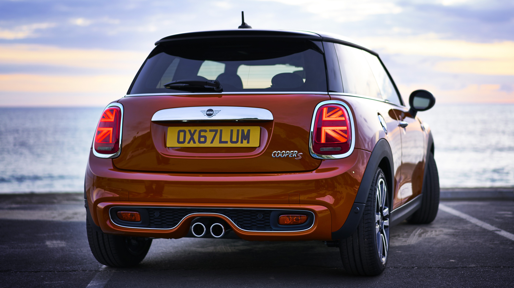

Projecten
Hieronder volgen een aantal projecten die ik heb uitgevoerd bij mijn verschillende werkgevers. Ik laat hierbij een reeks afbeeldignen of screenshots zien en deze probeer ik vervolgens zo goed mogelijk toe te lichten.
WebShop
Bij Sentean Group heb ik vooral bijgedragen aan de patienten infotainment app. Deze app dient om de patient te entertainene en de verpleging te ontzorgen. Dit doet de app door middel van verschillende soorten entertainment, maar ook door het bieden van communicatiemiddelen en zorgondersteunend materiaal. Binnen deze app ben ik verantwoordelijk geweest voor het ontwerpen en implementeren van verschillende nieuwe componenten.
Bij Sentean Group heb ik vooral bijgedragen aan de patienten infotainment app. Deze app dient om de patient te entertainene en de verpleging te ontzorgen. Dit doet de app door middel van verschillende soorten entertainment, maar ook door het bieden van communicatiemiddelen en zorgondersteunend materiaal. Binnen deze app ben ik verantwoordelijk geweest voor het ontwerpen en implementeren van verschillende nieuwe componenten.

This Portfolio
The website you're looking at is also all homemade by yours truly.